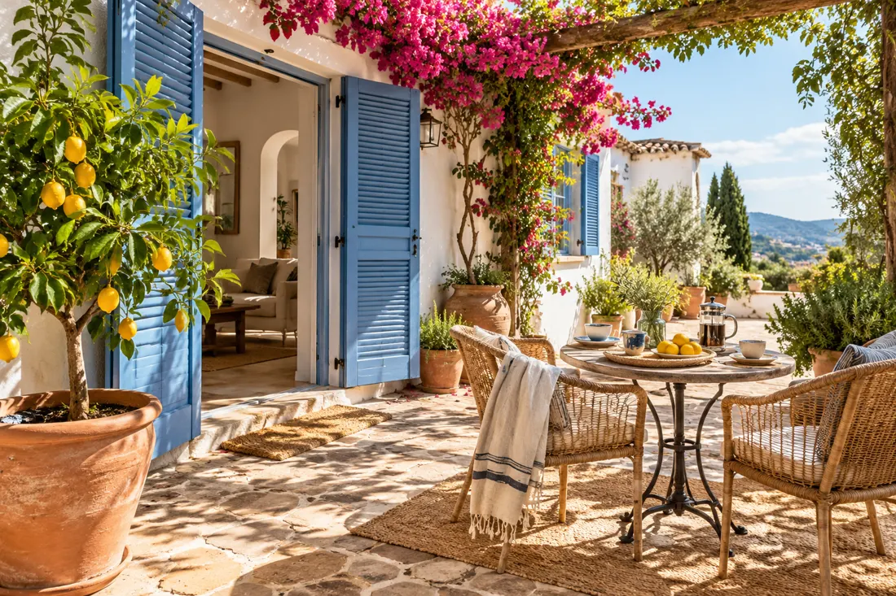

Ditt nästa kapitel, i Spanien
En plats att
kalla din egen.
Från den första längtan till ett hem som passar ditt liv. Hitta bostaden – och kunskapen för att ta nästa steg.
Utforska bostäder ↓Keyra Properties för bostäder. Keyra Insights för vägen dit.

Enkel sök
Vad letar du efter?
Utgå från platsen, din budget och hur du vill bo. Priser anges i euro, före köpkostnader.
Bostäder att upptäcka
Hämtar bostadsutbudet…
Kunskap före beslut
Huset är bara början.
Förstå köpprocessen, budgetera för kostnaderna runt köpet och ta reda på vad som behöver granskas innan du skriver under.
Bra att veta
Från sökning till visning
Varifrån kommer bostäderna?
Utbudet hämtas från Resales Online när Keyras anslutning är aktiverad. Vilka bostäder som visas beror på Keyras tillgång till nätverket och inställningarna för utbudet.
Ingår skatter och köpkostnader i priset?
Nej. Annonspriset är bostadens begärda pris. Skatter, juridisk hjälp och andra köpkostnader tillkommer. Läs om kostnader runt köpet.
Hur vet jag att bostaden fortfarande är till salu?
Utbudet hämtas från leverantören vid sökning och när du öppnar ett objekt. Pris och tillgänglighet behöver ändå bekräftas inför visning och köp.
Kan jag jämföra områden innan jag väljer bostad?
Ja. Börja med Keyras områdesguider och jämför vardagsliv, service och kommunikationer med dina egna behov.